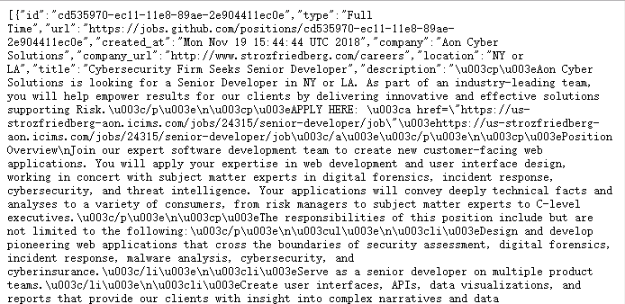
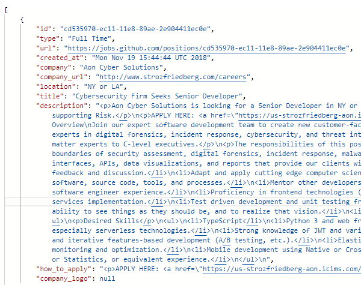

As I talked about in 'API' chapter, it's hard to give a definition which tells us what an API. To better understand API, it's best for us to try APIs on our own to get some hands-on experience. This is exactly what we are going to do now by using Postman
Postman is an API(application programming interface) development tool which helps to build, test and modify APIs.
Why should we use it and why is it so popular?
1.Almost any functionality that could be needed by any developer is encapsulated in this tool.
2.It has the ability to make various types of HTTP requests(GET, POST, PUT, PATCH), saving environments for later use, converting the API to code for various languages(like JavaScript, Python).[1]
3.It offers a sleek user interface with which to make HTML requests, without the hassle of writing a bunch of code just to test an API's functionality.[2]
When you access job.github.com and click on the 'api' on the bottom, you will finally get this:

This is a .json file and very hard for us to read. If I enter the url of the 'api' page on Postman, it will get much better:

This is an example of 'GET' method, which is to retrieve the data from github server. What's more, you can try POST, PUT and other HTTP requests in Postman